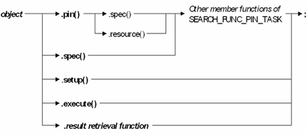

SEARCH_FUNC_TASK
The SEARCH_FUNC_TASK API holds search conditions for one or more pins and sites, and executes these searches in parallel. The API can also be used to retrieve the search results.
Class definition
- Constructor
-
SEARCH_FUNC_TASK(); SEARCH_FUNC_TASK(const INT errorCountNumber, const TM::ERROR_COUNT_MODE mode);
- Enumeration type TM::ERROR_COUNT_MODE
-
namespace TM { enum ERROR_COUNT_MODE { ERROR_PER_CYCLE, ERROR_PER_EDGE }; } - Member functions:
Constructor
SEARCH_FUNC_TASK();
This constructor creates an object of the SEARCH_FUNC_TASK class, which allows the user to define different search conditions for different pins or different sites, to execute all measurements in parallel, and to retrieve the search results.
SEARCH_FUNC_TASK(const INT errorCountNumber, const TM::ERROR_COUNT_MODE mode);
This constructor is used for error count based search. It aims to find out the PASS/FAIL transition with the specified error count number as the threshold. When the error count is less than errorCountNumber, it is regarded as PASS. When the error count is larger than errorCountNumber, it is regarded as FAIL.
| errorCountNumber | The error count number used as pass threshold. It must be positive. |
| mode | The error count mode. It can be
|
Structure of a search condition
The general format for defining a search condition is
object.func().sub_func_1().sub_func_2()...sub_func_N();
The general format for downloading or executing a collection of search conditions, or retrieving search results, is
object.func();
The parameters have the following meaning:
| object | Object of the SEARCH_FUNC_TASK class |
| func() | Member function of the SEARCH_FUNC_TASK class |
| sub_func_i() | Member function of the SEARCH_FUNC_PIN_TASK class |
This results in the following syntax diagram, which also indicates some additional restrictions for the definition of search conditions:

The functions in bold type (including the spec() function in the second line) are member functions of the SEARCH_FUNC_TASK class, those in normal type (including the spec() function in the first line) belong to the SEARCH_FUNC_PIN_TASK class.
Member functions
- execute()
-
void execute();
This member function executes a search based on the previously defined search conditions. If these conditions have not yet been downloaded (for example, by the setup() member function), execute() first downloads the conditions.
There are no parameters in this member function.
- getFailValue()
-
DOUBLE getFailValue() const; DOUBLE getFailValue(const STRING & pin) const;
This member function returns the last FAIL value if a transition from FAIL to PASS is found, or the first FAIL value if a transition from PASS to FAIL is found.
If you did not use the pin() member function to define the search condition, the parameter pin needs not to be specified. If a pin is specified, the function returns the result for the specified pin.
Parameter pin Setup pin for which the result is to be retrieved - getPassFail()
-
Boolean getPassFail() const; Boolean getPassFail(const STRING & pinlist) const;
If no parameter is specified, this member function returns TRUE when a PASS/FAIL or FAIL/PASS transition has been found in the search range for at least one pin, and FALSE otherwise.
If a pin list is specified, the function returns TRUE when a PASS/FAIL or FAIL/PASS transition has been found in the search range for all the specified pins, and FALSE otherwise.
Parameter pinlist List of setup pins that contribute to the result - getPassValue()
-
DOUBLE getPassValue() const; DOUBLE getPassValue(const STRING & pin) const;
This member function returns the last PASS value if a transition from PASS to FAIL is found, or the first PASS value when a transition from FAIL to PASS is found.
If you did not use the pin() member function to define the search condition, the parameter pin needs not to be specified. If a pin is specified, the function returns the result for the specified pin.
Parameter pin Setup pin for which the result is to be retrieved - getResultSpec()
-
TM::SPEC_RESULT getResultSpec() const; TM::SPEC_RESULT getResultSpec(const STRING & pin) const;
This member function returns the general type of the result. The possible return values are as follows:
TM::TransitionPassFail A transition from PASS to FAIL was found TM::TransitionFailPass A transition from FAIL to PASS was found TM::AllPass All functional tests passed TM::AllFail All functional tests failed If you did not use the pin() member function to define the search condition, the parameter pin needs not to be specified. If a pin is specified, the function returns the result for the specified pin.
Parameter pin Setup pin for which the result is to be retrieved - maskCycles()
-
void maskCycles(const INT & maskBefore, const INT & maskAfter); void maskCycles(const INT & runTo);
This member function sets a cycle mask for all configured pins before executing a spec search. It only supports masking the cycles from 0 to a specified cycle or from a specified cycle to the end. The mask will be cleared when the spec search is finished or the test method stops due to some error before the search ends. If the search is executed with a multi-port burst, using this function requires that you specify the reference port with the spec() function.
Parameters maskBefore All cycles before the specified cycle are masked and do not contribute to the pass/fail result. The specified cycle is not masked. If maskBefore is not a multiple of 8, cycles will be recorded starting from the next lowest multiple of 8. The cycles before this multiple of 8 will be recorded, but discarded afterward.
maskAfter All cycles after the specified cycle are masked and do not contribute to the pass/fail result. The specified cycle is not masked. The result recording will run to the end of the test, but the cycles after the specified one will be discarded afterward. runTo The spec search runs to the specified cycle and stops there. All cycles after the specified cycle are not executed. - pin()
SEARCH_FUNC_PIN_TASK & pin(const STRING & pinlist);
This member function returns the reference to the SEARCH_FUNC_PIN_TASK object holding the search conditions for the specified pin list.
Note A call of this function must be followed by calls of member functions of the SEARCH_FUNC_PIN_TASK class. You cannot call another member function of the SEARCH_FUNC_TASK class after calling pin().Parameter pinlist List of setup pins for a search condition - setup()
-
void setup();
This member function downloads the previously defined search conditions, unless a search set with these conditions already exists. If an instance of this class is added to a TASK_LIST instance, the setup() member function of the TASK_LIST API calls this function.
There are no parameters in this member function.
This function must be used for search conditions containing variables. For details see Managing Search Conditions with Variables.
- spec()
-
SEARCH_FUNC_PIN_TASK & spec(const STRING & name, TM::SPEC_TYPE type); SEARCH_FUNC_PIN_TASK & spec(const STRING & name, const STRING & typestring);
This member function specifies a spec variable that is to be varied in the search.
Note A call of this function must be followed by calls of member functions of the SEARCH_FUNC_PIN_TASK class. You cannot call another member function of the SEARCH_FUNC_TASK class after calling spec().Parameters name Name of a spec variable. If the search is executed with a multi-port burst, you can add a port name to the spec variable in the format <name>@<port>. This format must be used- to define the reference port for the maskCycles() member function, and
- to change the port from which the period resolution is calculated (see Modifying the period for a search or shmoo in a multi-port setup (Pin Scale).
type Type of the spec variable. Possible values are: - TM::TIM: Timing spec variable
- TM::LEV: Level spec variable
typestring Type of the spec variable, specified as a string. Possible values are: - "TIM": Timing spec variable
- "LEV": Level spec variable
Important points
- The search conditions are stored in search sets in order to improve the throughput if a parallel search is executed in a testflow loop. For details see Reusing Search Conditions.
- Special care must be taken if the search conditions contain variables. For details see Managing Search Conditions with Variables.
- Dependent on the spec resource tied by a search, the parameter scope of the spec
variable might be different.
- If the variable is tied to a local resource, like a timing edge delay, you just need to make sure not to specify conflicting searches for the same resource.
- If the variable is tied to a global resource, like the tester period,
you need to pay more attention to the conflict that may be caused. For
example:
It is not allowed to specify a binary period search with a multi-site setup. For binary searches the next measured step depends on the latest search result. There could be different decisions made for the next step on the different sites. The period cannot be modified respectively per site.
It's not allowed to specify several period searches for the same port. Several searches would require to program different periods on the same port. You need to have the resources setup within two ports, then the setup is able to work.
Examples
Example 1
The first example shows how different search conditions can be defined for two different sites.
//
// Define SEARCH_FUNC_TASK instance
//
SEARCH_FUNC_TASK task;
//
// Define site specific start and stop values
//
DOUBLE site_start[2] = {20,40};
DOUBLE site_stop[2] = {80,90};
ON_FIRST_INVOCATION_BEGIN();
FOR_EACH_SITE_BEGIN();
//
//
// Get site specific values by referring to array elements
// with the CURRENT_SITE_NUMBER() API:
//
task.pin("p1,p2")
.spec("DEL",TM::TIM) // Delay time, defined in ns
.method(TM::Binary)
.start(site_start[CURRENT_SITE_NUMBER()-1])
.stop(site_stop[CURRENT_SITE_NUMBER()-1])
.resolution(1);
FOR_EACH_SITE_END();
task.execute();
ON_FIRST_INVOCATION_END();
Boolean pass_fail = task.getPassFail("p1,p2");
if (pass_fail == TRUE)
{
TEST("p1,p2", "", TM::Pass, TM::CONTINUE);
}
else
{
TEST("p1,p2", "", TM::Fail, TM::CONTINUE);
}
The different start and stop values are defined in two arrays. The array elements are accessed in the FOR_EACH_SITE_BEGIN … FOR_EACH_SITE_END block with the CURRENT_SITE_NUMBER() API.
The second example combines multiple sites with variable dependent conditions.
Example 2
//
// Define SEARCH_FUNC_TASK instance
//
SEARCH_FUNC_TASK task;
ON_FIRST_INVOCATION_BEGIN();
//
// Define dummy search condition without variables
//
task.spec("DEL",TM::TIM).method(TM::Binary).start(0).stop(50);
//
// Download but do not execute dummy search condition:
//
task.setup();
//
// Site-specific settings
//
FOR_EACH_SITE_BEGIN();
//
// Use the rand() function to assign different values to the
// variable var for every site and loop repetition in offline mode:
//
DOUBLE var = rand() % 50;
//
// Modify condition using the variable:
//
task.spec("DEL",TM::TIM)
.method(TM::Binary)
.start(var)
.stop(var + 50);
FOR_EACH_SITE_END();
//
// Download and execute modified condition:
//
task.execute();
ON_FIRST_INVOCATION_END();
The example uses the rand() function to assign different values to the variable in offline mode for every site and every loop repetition. In practice, the value of the variable will be determined by a previous measurement. For more information on handling search conditions with variables see Managing Search Conditions with Variables.
Example 3
This example intends to move the compare edge position of target pin (HS_TX1, HS_TX2), and monitor the error count of the target pin (HS_TX1, HS_TX2) to find the transition point at 5 errors.
//
// Define error count based search instance of SEARCH_FUNC_TASK
// search the transition point where the error count is 5 for each pin in the pinlist
//
SEARCH_FUNC_TASK ercSearch(5,TM::ERROR_PER_EDGE);
TM::SPEC_RESULT txRes;
STRING pinname;
ARRAY_D search_value_p, search_value_f;
//
// Expand pinlist into individual pins stored into vector.
//
STRING_VECTOR pinVector =
PinUtility.getDigitalPinNamesFromPinList("HS_TX1,HS_TX2",TM::ALL_DIGITAL);
ON_FIRST_INVOCATION_BEGIN();
//
// Setup search condition
//
for (int n = 0; n < pinVector.size(); n++)
{
pinname = pinVector[n];
//
// Spec variables to shift are HS_TX1_offset, HS_TX2_offset
//
STRING specName = pinname + "_offset";
ercSearch.pin(pinname)
.spec(specName,TM::TIM)
.start(0.1)
.stop(3.5)
.method(TM::LinBin)
.stepWidth(0.1)
.resolution(0.01)
.resultPins(pinname);
}
//
// Execute error count based search
//
ercSearch.execute();
ON_FIRST_INVOCATION_END();
//
// Retrieve search result per pin
//
for (int n = 0; n < pinVector.size(); n++)
{
pinname = pinVector[n];
txRes = ercSearch.getResultSpec(pinname);
if ( txRes == TM::TransitionFailPass || txRes == TM::TransitionPassFail )
{
search_value_p[n] = ercSearch.getPassValue(pinname);
search_value_f[n] = ercSearch.getFailValue(pinname);
cout << "Pin[" << pinname << "]"
<< "transition point is at: "
<< (search_value_p[n]+ search_value_f[n])/2 << endl;
}
else
{
cout << "No fail to pass transition was identified." << endl;
}
}
//
// Log the search result to the data log stream
//
PUT_DATALOG("HS_TX1,HS_TX2", "passValue", WAVE_LOG(search_value_p));
PUT_DATALOG("HS_TX1,HS_TX2", "failValue", WAVE_LOG(search_value_f));
Functional changes
- Introduced before SmarTest 6.3.2
- SmarTest 6.3.2: New member function maskCycles()
- SmarTest 7.5.1: New member function wait() of the subsidiary class SEARCH_FUNC_PIN_TASK